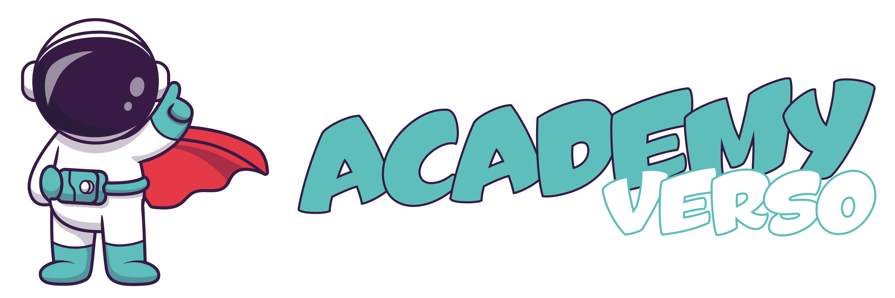

Grand Terraforming Agents
Elige Vice Nebula o Colonia Centinela para contribuir a un mundo compartido.
Elegir destino ↗
JUEVES 26 NOV · 15:00–15:55Participa con tu propio planeta, estrella o estación espacial. Descubre qué pueden construir los agentes de programación y explora una galaxia creada por la comunidad.
Dos formas de crear tu objeto: con GitHub Mobile o usando el formulario web.
Elige Vice Nebula o Colonia Centinela para contribuir a un mundo compartido.
Elegir destino ↗Crea una Issue pública con un alias, nombre y descripción de tu mundo.
Crear GitHub Issue ↗Elige dos mundos existentes y atraviesa un portal interdimensional con regreso accesible.
Abrir la galaxia ↗Explora las Issues, las PRs y las pruebas automatizadas del proyecto.
Ver repositorio ↗Cada creación válida se registra como una Issue. Los contadores representan objetos, no votos de personas únicas. GitHub Actions puede tardar en completar el registro. No incluyas datos personales.
Presentación y evidencias reales para seguir el circuito del directo.
Las Issues #10 y #11 son ensayos del equipo, no aportaciones de asistentes. La PR #22 y sus respaldos #23–#25 son referencias preparadas con ChatGPT; no representan ejecuciones reales de los agentes. Las contribuciones de Claude y Codex solo se presentarán como ejecutadas si hay sesiones y PRs verificables.